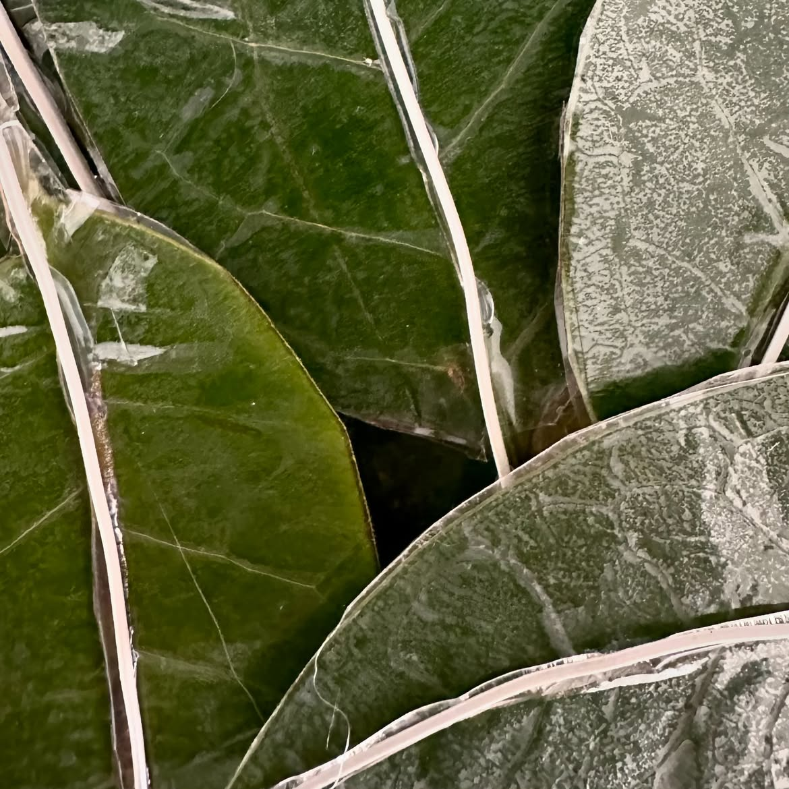
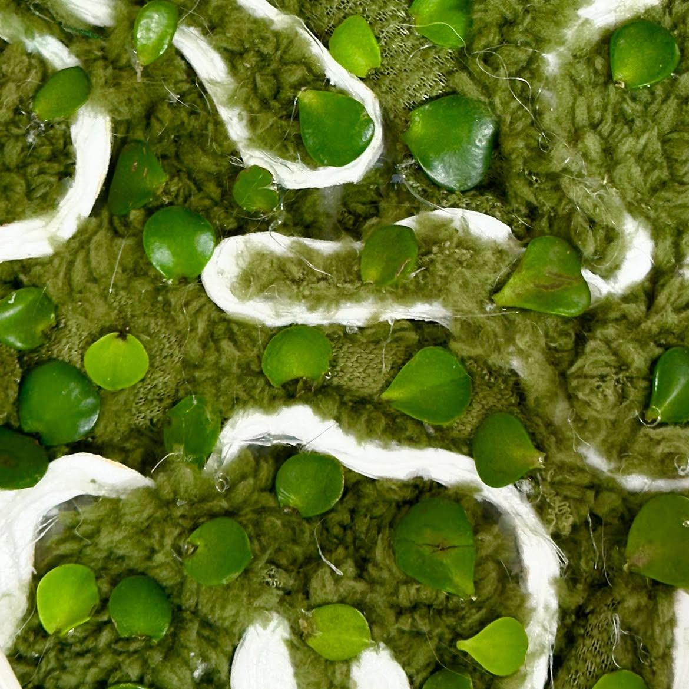
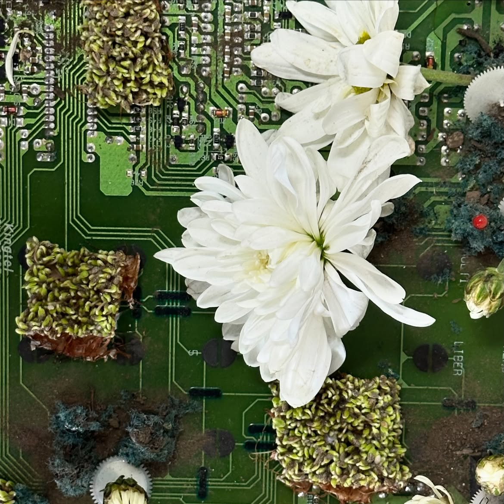
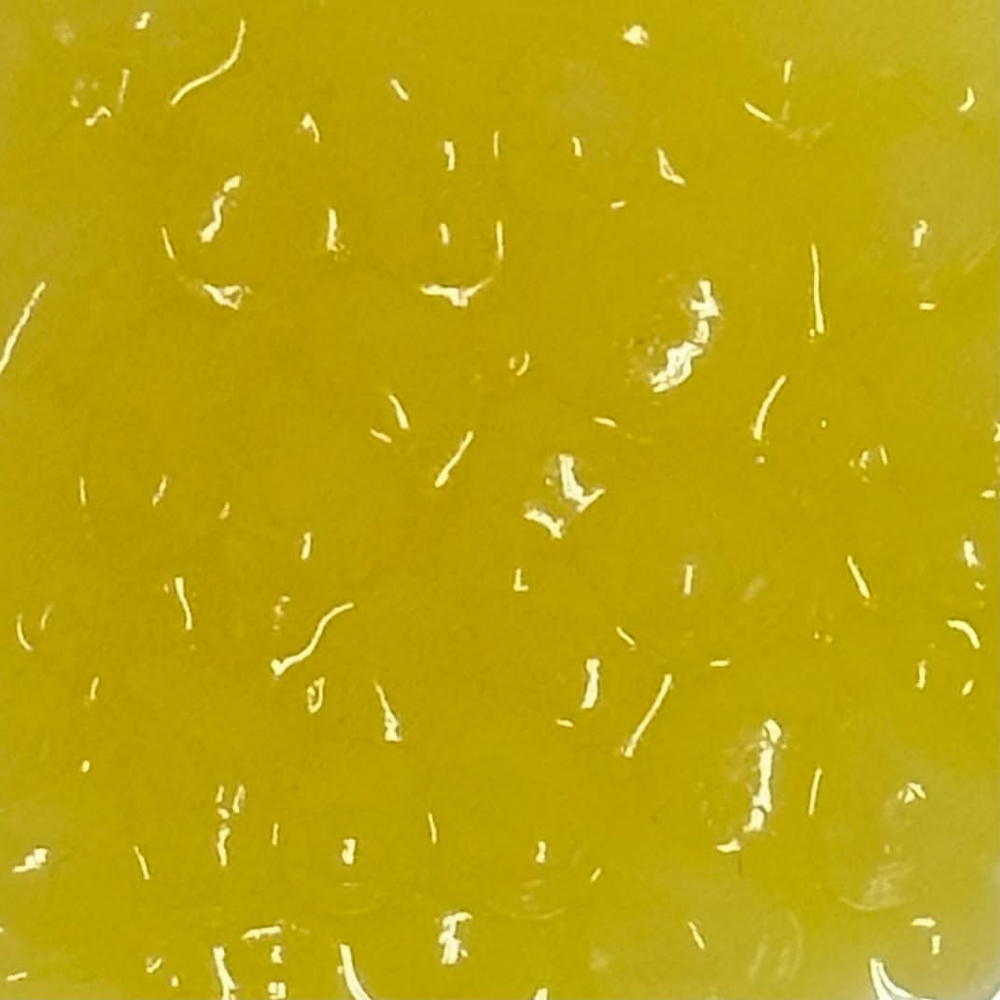
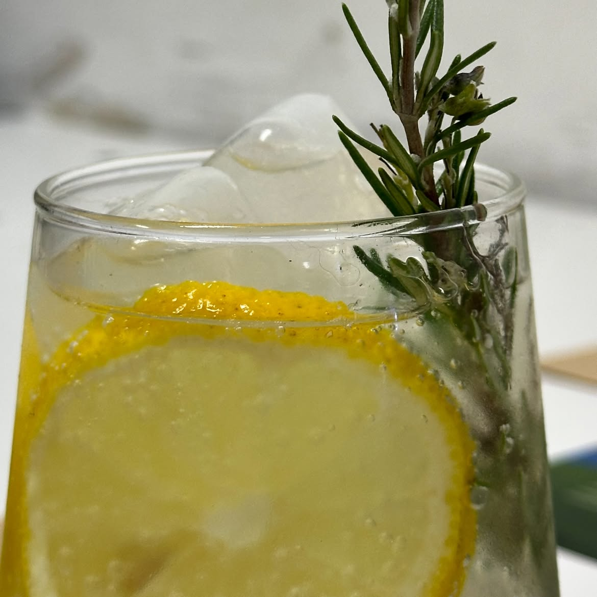
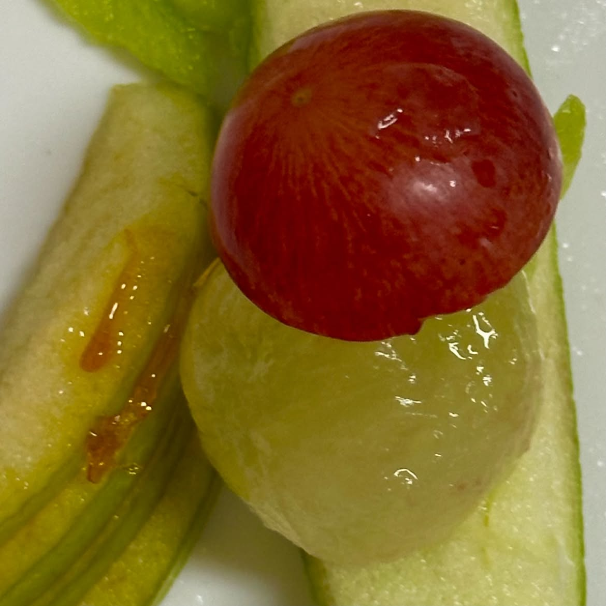
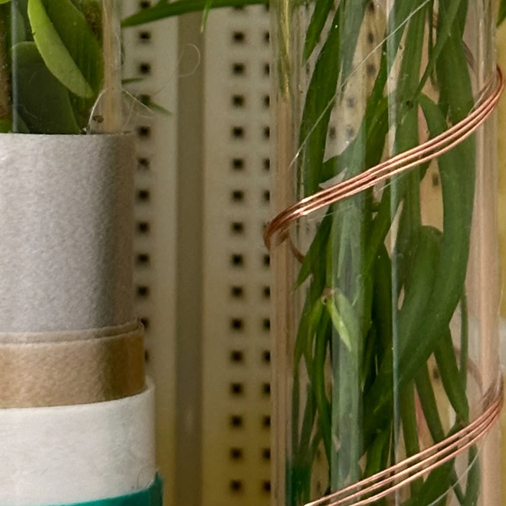
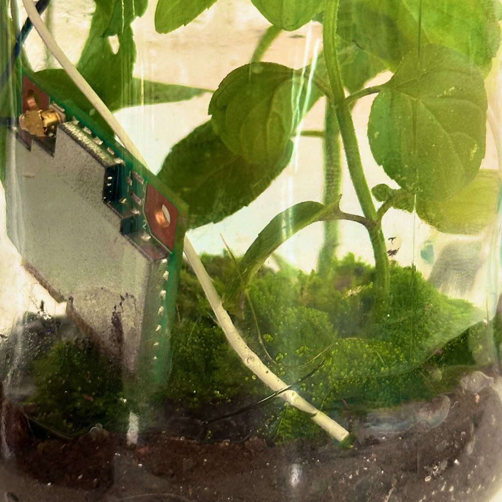
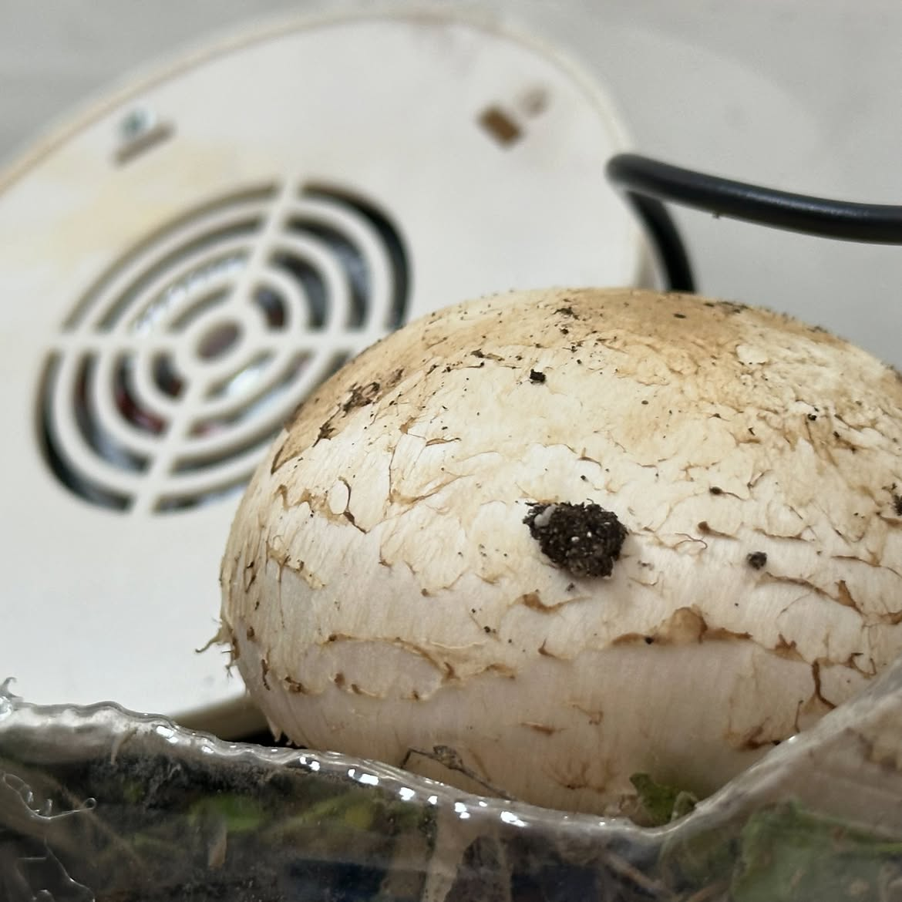

Ecosistema abierto
Las recetas de los biomateriales son públicas y versionadas. Cualquier huerto puede descargarlas, adaptarlas a su clima y devolver la variante al archivo.
La infraestructura alimenta a la flora, la flora nutre a la ciudad y cada organismo documenta lo que aprende para que otro pueda replicarlo.
Manifiesto
Después de la transición ecológica dejamos de fabricar objetos que terminan. Cada material que circula por NeoBloom llega con su receta abierta: cómo se cultiva, cuánta agua pide, cuándo vuelve a la tierra.
Las recetas de los biomateriales son públicas y versionadas. Cualquier huerto puede descargarlas, adaptarlas a su clima y devolver la variante al archivo.
Lo que sobra de un cultivo es el sustrato del siguiente. No hay residuo: hay material esperando su próximo ciclo dentro del mismo sistema.
Los servidores refrigeran invernaderos, los invernaderos filtran el aire de los servidores. La red se mantiene viva porque la flora la necesita tanto como ella a la flora.
Unidad de cultivo
Un fragmento extraído del universo NeoBloom. Movelo con el cursor para ver más sobre el.
Espacio reservado para la escena 3D
Muestrario
Cada ficha incluye su ciclo de vida y el huerto donde se cultivó por primera vez. Todas las recetas se descargan completas.

NB-01
Lámina translúcida cultivada en tanques de té. Sella invernaderos y se disuelve en agua tibia.

NB-02
Tejido vivo que regula la temperatura de quien lo usa. Respira y filtra partículas.

NB-03
Cápsula comestible que concentra la cosecha de un día entero para estaciones de barrio.

NB-04
Crece dentro de moldes hasta formar vigas y paneles reutilizables para construcción.

NB-05
Polímero flexible derivado de macroalgas marinas con alta resistencia al impacto.

NB-06
Bloque de construcción fijado por bacterias que absorbe dióxido de carbono activamente.

NB-07
Matriz de retención hídrica biodegradable para optimizar riegos en zonas áridas.

NB-08
Tinte orgánico de espectro amplio extraído de cultivos controlados de hongos.

NB-09
Membrana porosa diseñada para retener partículas pesadas en conductos de ventilación.
Terminal de acceso
Co-Bloom es la parte jugable de NeoBloom. Administrás una colonia, compartís tus recetas y ves qué pasa cuando otra persona las mejora.
Explorar Videojuego